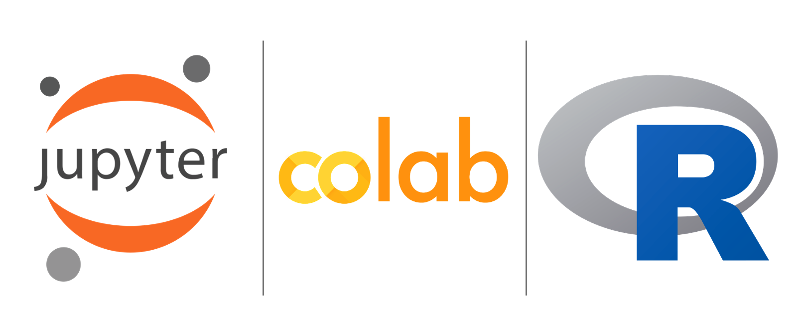
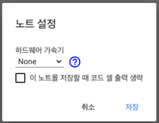
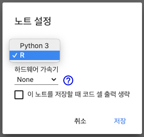
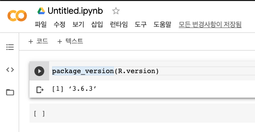

[R] Colab에서 R 사용하기
파이썬만 지원하던 구글 코랩에서도 R 사용이 가능하다

구글 Colab(코랩)에서는 그동안 파이썬만 지원되었는데, 최근에 R도 사용이 가능하다고 한다.
아직 공식적으로 공지가 된 것 같지는 않고, 아는 사람들 사이에서 알음알음 사용되고 있는 상황인 것으로 보인다.
Colab은 기본적으로 파이썬으로 세팅
코랩에서 R을 사용하기 위해서는 약간의 트릭이 필요하다. 특정 주소로 접속해야 한다.
코랩에 접속해서 메뉴 [파일]-[새노트]로 노트를 열면 아직 R지원이 안되니 조심하자. [새노트]를 열게 되면 아래 링크가 호출되는데, 그러면 아래 사진과 같이 노트 설정 메뉴에서 런타임 유형을 파이썬에서 R로 바꿀 수 없다.
https://colab.research.google.com/#create=true

[노트 설정] 방법은 코랩의 메뉴 중 [수정]->[노트설정]으로 접속 가능하다.
Colab에서 R 사용하기
코랩에서 R을 사용하기 위해서는 아래 주소로 접속해야 한다. 위 주소에서 끝에 &language=r을 추가하면 된다. 그러면 아래 사진과 같이 노트 설정에서 런타임 유형 설정이 보이고, R과 파이썬 중 하나를 고를 수 있다.
https://colab.research.google.com/notebook#create=true&language=r

주소로 접속하게 되므로, 기존에 코랩에 로그인이 된 계정이 있어야 한다. 계정을 만들고, 코랩에 한번 접속한 후에 위 주소로 접속해 보자.
접속을 하게되면, 파일명이 Untitled.ipynb로 뜰텐데, 걱정말고 R 코드를 입력하고 실행해 보자. 아래 예시처럼 바로 실행이 가능하다. 2020년 9월 현재 3.6.3 버전의 R이 설치된 것으로 보인다.

전반적인 구현 방식을 보니, 주피터 노트북에서 R을 사용하는 방식이 코랩에서 사용된 것이 아닌가 한다. 주피터노트북+코랩+R의 형태가 되는 것 같다.
나가며
R은 r studio cloud{:target=”_blank”}로 온라인 사용이 가능하긴 하지만, 코랩에 익숙한 사용자의 경우에는 위 방식을 사용하는 것도 방법이 될 수 있을 것 같다. 해당 내용에 대해서는 과거에 포스팅한 것을 참고하자.
- 참고링크 : 파이썬과 R을 온라인에서 바로 코딩하는 꿀팁
암튼 데이터 분석이나 개발이나 점점 더 Serverless(서버리스) 형태로 바뀌고 있는 것으로 보인다. 코드만 있으면 바로 구현이 가능한 형태다. 아마존 람다, 깃헙 액션, 깃랩 CI/CD, Cloudflare Workers 등등 사용할 수 있는 서비스들이 작년 올해 들어서 엄청나게 많아지고 있다. 그만큼 진입장벽이 낮아지고, 학습커브도 완만해진다고 할 수 있을까나? 조금만 마음만 먹으면 시도해 볼 수 있는 환경이 마련되고 있는 것은 확실해 보인다.
)